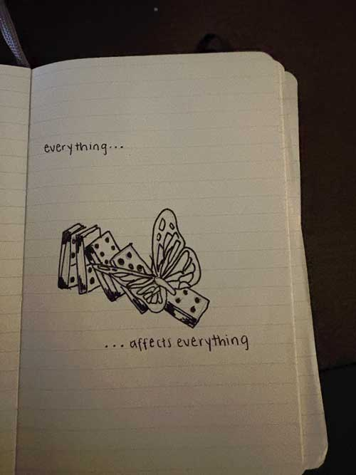

Post 4 - Visual Thinking Analysis
The image shows a golden temple structure with two ornate spires reaching toward a cloudy sky. The surface of the temple gleams, reflecting soft, diffused light from above. The architecture is intricate, with decorative elements accentuating the height and grandeur of the structure. To the right, part of a traditional temple roof with dark, curved eaves is visible, contrasting with the brightness of the gold. Among the gilded surfaces, a small green plant has taken root in one of the structures, standing out against the otherwise polished and intentional design. The clouds in the background add a sense of depth and movement, softening the rigid lines of the architecture.
One of the most intriguing aspects of the image is the presence of the plant, which disrupts the otherwise pristine and symmetrical composition. While the religious and cultural significance of the temple is immediately apparent, the lone sprout introduces an element of mystery. The contrast between the grand, carefully maintained structure and the spontaneous emergence of life invites deeper reflection on the relationship between human craftsmanship and the persistence of nature.
To push the visual thinking further, one could focus on the contrast between the permanence of the temple and the fleeting nature of the plant. The temple, built with precision and intention, is meant to stand for generations, while the plant is temporary, fragile, and likely unnoticed. This contrast could be explored through a narrative that considers time—how the temple represents history, tradition, and human devotion, while the plant symbolizes change, adaptation, and nature’s quiet persistence.
This image is interesting because it represents cause and effect and how beautiful that process can be. The falling dominoes and the butterfly suggest that even moments of change—especially the unexpected ones—can lead to something meaningful. I drew this at a time when a big change had just happened in my life, and despite the uncertainty, a lot of good came from it. The image captures that feeling of transformation, showing how one small shift can set off a chain reaction that leads to something unexpected but ultimately positive.
As a part of a personal archive, this collection tells a story about how I process change. It reflects a mindset of seeing challenges not just as obstacles but as catalysts for growth. Looking at this image now, I realize it captures my belief that even when things feel uncertain, they can lead to something better. It represents a shift in perspective, a way of making peace with the unknown and trusting the process.
To make the image even more compelling, I could consider expanding on the idea visually. Adding more elements—perhaps a larger sequence of dominoes showing different stages of falling—could reinforce the idea of transformation over time. Using color could highlight the contrast between the structured, rigid nature of the dominoes and the organic, free movement of the butterfly. Another approach could be incorporating other symbols of change, like growing plants or ripples in water, to emphasize the interconnectedness of life’s events.
Post 3 - Visual Thinking Strategies Research
10 Intriguing Photographs to Teach Close Reading and Visual Thinking SkillsOsmo
Visual thinking is a powerful tool that enhances comprehension and creativity by leveraging imagery and spatial understanding. The article "10 Intriguing Photographs to Teach Close Reading and Visual Thinking Skills" (see link above) emphasizes the importance of using compelling visuals to foster analytical skills. In my experience as a designer, I've found that well-crafted visuals not only capture attention but also convey complex ideas more effectively than text alone.
A website form I discovered that exemplifies the fusion of imagery and interactivity to inspire visual thinking is Osmo (see link above). Osmo's design employs vibrant visuals and interactive elements that engage users in a playful yet educational experience. One of its key strengths is its use of vibrant, high-quality imagery and engaging animations that immediately capture the user's attention. The website effectively combines storytelling with interactivity, allowing users to explore Osmo's educational products through smooth transitions and dynamic visuals.
However, while Osmo’s design is visually compelling, it does present some drawbacks. The heavy use of animations and transitions, while engaging, may lead to longer loading times, which can be frustrating for users with slower internet connections. Additionally, the emphasis on aesthetics may sometimes overshadow usability—certain interactive elements, while visually appealing, could be less intuitive for users unfamiliar with highly dynamic web designs.
Despite these concerns, Osmo's website remains a strong example of how interactive visuals can be used to inspire learning and engagement, making it a relevant case study for understanding the role of visual thinking in web design.
Post 2 - Overlays Design Pattern Research
Best Practices for Modals/Overlays/Dialog WindowsThe article “Best Practices for Modals/Overlays/Dialog Windows” (see link above) provides a comprehensive guide on the effective use of modal windows in user interface design. The author emphasizes that, while modals can simplify interfaces and save screen space, their overuse or improper implementation can lead to user frustration, likening them to the intrusive pop-up windows of the past.
This article made me rethink how I approach these elements in UI design. I’ve often used modals as a quick solution for capturing user input or displaying additional content, but this article highlighted the importance of intentionality. The reminder that modals should not be overused, especially for error messages or notifications, really resonated with me. I’ve seen firsthand how intrusive modals can disrupt the user experience, especially when they appear unexpectedly or lack clear exit options.
One key takeaway for me was the emphasis on user-initiated modals. I hadn’t always considered how disruptive forced modals can be, particularly when they demand immediate attention without warning. Moving forward, I plan to be more mindful about when and how I implement modals, ensuring they genuinely enhance the experience rather than interrupt it. Additionally, the discussion about accessibility and usability on mobile devices reinforced the importance of adapting designs based on context rather than applying a one-size-fits-all approach.
Post 1 - Best Practices and Ideas
Best Practices for Form DesignLinkedIn Sign Up Form
The article “Best Practices for Form Design” (see link above) offers a clear and practical guide to creating user-friendly forms, making it especially useful for newer designers. It covers key design principles like grouping related fields, using single-column layouts for better usability, and ensuring clear labeling—all foundational elements of effective form design. While much of the advice might feel familiar to seasoned designers, it serves as a great reminder of the basics we sometimes overlook when designing products. I particularly appreciated the emphasis on accessibility, such as supporting keyboard navigation and providing helpful error messages, which are critical for creating inclusive designs. While the article doesn’t delve deeply into more complex challenges, it’s a strong resource for reinforcing best practices. Overall, it’s a helpful read that highlights the importance of thoughtful, user-focused design.
A website form that I think exemplifies best practices is the LinkedIn sign-up form (see link above). The form employs clear and concise labels and provides real-time feedback through validating user data. The user flow is logical and seamless, and ensures that users can sign up as efficiently as possible.